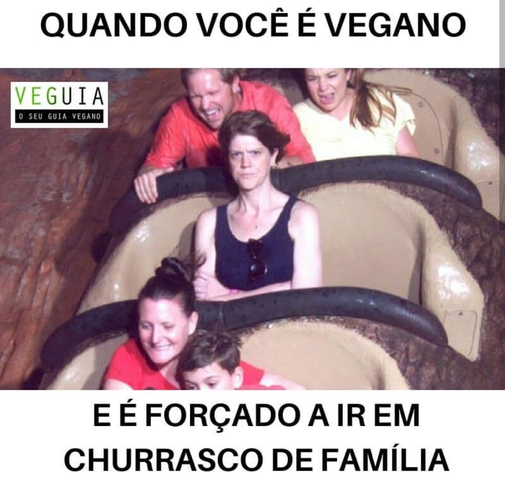

O que realmente é vegetarianismo?
O que é?
O vegetarianismo é uma prática alimentar que exclui o consumo de derivados animais como a carne vermelha e tem como principal fonte de alimentos os vegetais e os fungos. O vegetarianismo emergiu como um movimento alimentar significativo nas culturas ocidentais. Foram criadas as expressões “vegetariano estrito” e “ovolactovegetariano” para diferenciar as pessoas que têm uma dieta 100% baseada em vegetais e fungos das que excluem as carnes mas consomem laticínios e ovos, respectivamente.
Benefícios
Tipos de vegetarianismo
- Ovolactovegetarianismo
- Pessoas adeptas consomem apenas alimentos de origem vegetal, leite e ovos
- Vegetariano Restrito
- Pessoas adeptas consomem somente alimentos de origem vegetal
| Titulo1 | Titulo2 |
|---|---|
| Conteúdo | Conteúdo |